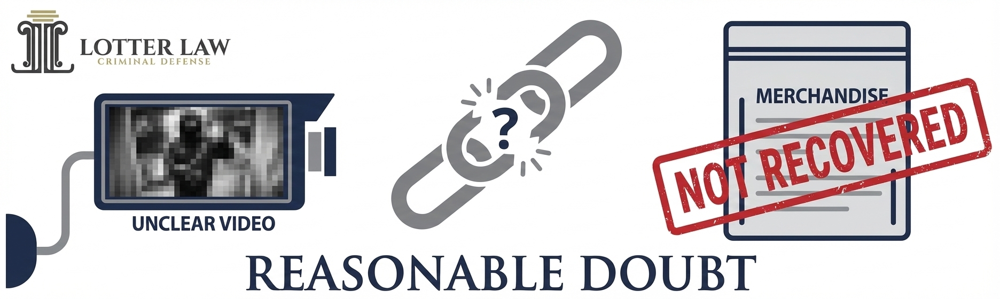

Theft Charges & Your Future: Why "Petit" Theft Can End a Graduate Career
Florida's Hidden 5-Year Statute of Limitations for Retail Theft
A seemingly minor theft charge can surface years later, threatening professional credentials and career prospects. Understanding Florida Statute 812.035(10) and mounting an effective evidence-based defense is critical.
Call 407-500-7000 for Immediate Defense ConsultationThe "It's Just a Misdemeanor" Trap
Clients frequently approach retail theft charges with the misconception that petit theft is a minor offense comparable to a traffic citation. This assumption is dangerously incorrect. In Florida, petit theft constitutes a crime of dishonesty under Florida Statute § 812.014, carrying consequences that extend far beyond criminal penalties.
Career-Ending Implications for Professionals
For graduate students and professionals seeking licensure or employment in regulated fields, even a withhold of adjudication or plea agreement can be catastrophic:
- Legal Profession: The Florida Bar requires disclosure of all criminal history, including withholds. A crime of dishonesty raises serious character and fitness questions that can prevent bar admission.
- Medical Profession: Medical boards scrutinize applicants for moral character. Theft convictions frequently result in license denial or restrictions.
- Financial Services: FINRA and state licensing authorities mandate disclosure of crimes involving dishonesty. A theft charge can permanently bar employment in banking, securities, or insurance.
- Corporate Employment: Background checks conducted by Fortune 500 companies and professional firms routinely flag theft charges, disqualifying candidates from consideration.
A withhold of adjudication—where the court formally withholds finding guilt—does not eliminate the record. The arrest and disposition remain on public record and appear on background checks. For individuals who have invested years in education and professional development, accepting a plea without understanding these ramifications constitutes a critical error.
Legal Distinction: Withhold vs. Conviction
A withhold of adjudication means the court accepts a plea but does not formally adjudicate guilt. While this preserves certain civil rights, it does not erase the criminal record. Employers, licensing boards, and educational institutions can still see the charge and disposition. For crimes of dishonesty, this distinction offers minimal practical protection.
The Legal Loophole: Florida's 5-Year Statute of Limitations for Retail Theft
Florida law establishes a general statute of limitations of two years for first-degree misdemeanors pursuant to Florida Statute § 775.15(2)(b). However, the Florida Legislature carved out a specific exception for retail theft offenses.
Florida Statute § 812.035(10)
"The prosecution of a retail theft or farm theft, regardless of the value of the property stolen, may be commenced at any time within 5 years after the commission of the offense."
This statutory provision extends the prosecution window from two years to five years, providing the State with significantly more time to file formal charges.
This extended statute of limitations creates a false sense of security. Many individuals who are initially investigated for retail theft assume that if no charges are filed within twelve to eighteen months, the matter has been resolved. This assumption is incorrect. The State Attorney's Office may file charges at any point within five years of the alleged offense.
Strategic Timing by Prosecutors
Prosecutors are aware of this extended filing period and frequently exercise it strategically. Charges may be filed years after the incident, often immediately before the five-year deadline expires. This delay presents significant challenges for defendants, as witnesses become unavailable, memories fade, and evidence deteriorates. Conversely, the State's evidence—typically surveillance video and investigative reports—remains preserved.
Why the Exception Exists
The Legislature enacted the extended statute of limitations to address organized retail theft operations. However, the statute applies equally to isolated, first-time offenders. This broad application means that a single alleged incident can resurface years later, regardless of the defendant's conduct in the interim.
Case Study: The Graduate Student's Nightmare
The Situation
The client was a graduate student in his final year of a competitive professional program. Two years prior, he had been involved in an incident at a retail establishment. No immediate arrest occurred, and he received no formal notification from law enforcement. He reasonably assumed the matter had been investigated and closed.
As graduation approached and he prepared to sit for professional licensing examinations, formal criminal charges were filed. The timing was deliberate: the State filed charges within weeks of the five-year statute of limitations expiring. The client was now facing petit theft charges that threatened to disqualify him from licensure in his chosen field.
The Stakes
The client had invested substantial time, effort, and financial resources into his graduate education. A conviction or withhold of adjudication for a crime of dishonesty would have resulted in:
- Denial or indefinite postponement of professional licensure
- Mandatory disclosure to licensing boards with detailed explanations
- Potential disqualification from employment in the field
- Effective nullification of years of education and career preparation
The client could not accept a plea agreement. A dismissal was the only acceptable resolution.
The Challenge
The State's case appeared facially sufficient. They possessed surveillance footage from the retail establishment, loss prevention reports, and a photo lineup identification. The charges were filed within the statutory period, precluding a statute of limitations defense. The case would proceed to trial unless we could demonstrate that the State's evidence was insufficient to establish guilt beyond a reasonable doubt.
The Defense Strategy: Systematic Evidentiary Attack
Retail theft prosecutions under Florida Statute § 812.014 require the State to prove beyond a reasonable doubt that the defendant knowingly obtained or used, or endeavored to obtain or use, property with intent to deprive the merchant of the property's use or benefit. The prosecution must establish both the actus reus (wrongful act) and mens rea (criminal intent).
Our defense strategy focused on systematically undermining each element of the State's case:
1. Surveillance Video Analysis
Technical Examination of Video Evidence
Surveillance video is frequently the cornerstone of retail theft prosecutions. However, video quality, camera angles, and temporal gaps often create reasonable doubt.
We obtained discovery and conducted a frame-by-frame analysis of the surveillance footage. Our analysis revealed significant evidentiary deficiencies.
- Image Quality: The video resolution was poor, with significant pixelation. The client's face was never clearly visible in the footage. Establishing identity through the video alone was not possible.
- No Clear Depiction of Concealment: The video showed the client in various areas of the store but never clearly depicted him concealing merchandise. The State would argue that inference could establish concealment, but inference alone is insufficient when the footage is ambiguous.
- No Exit with Merchandise: The footage showed the client exiting the store, but there was no clear depiction of merchandise in his possession at the point of exit. Retail theft requires proof that the defendant exited the premises with unpurchased merchandise or attempted to do so.
- Temporal Gaps: The surveillance system did not provide continuous coverage of the client's movements. Gaps in the footage raised questions about what occurred outside the camera's view.
We prepared a detailed motion to suppress or limit the video evidence, arguing that its poor quality and lack of clarity rendered it more prejudicial than probative under Florida Evidence Code § 90.403.

2. Absence of Physical Evidence
In retail theft cases, the most compelling evidence is the recovery of stolen merchandise from the defendant. In this case, the client was never detained, stopped, or arrested at the scene. No merchandise was ever recovered from his person, vehicle, or residence.
Absence of Possession Evidence
The absence of physical evidence is not proof of innocence, but it creates reasonable doubt. If the client allegedly stole merchandise, where was it? The State could not answer this question. At trial, we would argue that the lack of recovered merchandise undermined the essential element of intent to deprive the merchant of property.
3. Photo Lineup Identification Challenges
Law enforcement conducted a photo lineup approximately eighteen months after the alleged offense. The loss prevention officer identified the client from the lineup. However, we identified substantial procedural and reliability issues with the identification:
- Suggestiveness: We filed a motion pursuant to Neil v. Biggers, 409 U.S. 188 (1972), and Manson v. Brathwaite, 432 U.S. 98 (1977), challenging the lineup procedure. We argued that the photographs used in the array were not sufficiently similar in appearance, creating a risk that the witness selected the client because his photograph stood out.
- Delayed Identification: The identification occurred nearly two years after the alleged incident. Memory degradation over such a period significantly reduces reliability. Florida courts recognize that the passage of time undermines the weight and credibility of eyewitness identification.
- Witness Certainty: While the witness identified the client, the degree of certainty expressed was equivocal. We prepared to cross-examine the witness regarding the basis for the identification and any prior statements reflecting uncertainty.
- Lack of Contemporaneous Identification: No identification was made at the time of the alleged offense. The client was not detained or arrested on the day of the incident. The delayed identification suggested that law enforcement did not have sufficient confidence in the evidence at the time.
Florida Law on Eyewitness Identification
Florida courts apply a totality-of-the-circumstances test to evaluate the reliability of eyewitness identifications. Factors include the opportunity to view the defendant, the degree of attention, accuracy of prior descriptions, level of certainty, and the time elapsed. See State v. Lawson, 291 So. 3d 1020 (Fla. 2020). In this case, multiple reliability factors weighed in favor of exclusion or significant limitation of the identification testimony.
4. Inadequate Investigation
Law enforcement filed charges without conducting a thorough investigation. The client was never interviewed or given an opportunity to provide his account of events. This failure violated basic investigative protocols and deprived the State of potentially exculpatory information.
At trial, we would emphasize that the State rushed to judgment based on ambiguous video and a questionable identification, without pursuing alternative explanations or conducting a complete investigation. This approach would undermine the State's credibility and highlight reasonable doubt.
The Victory: Nolle Prosequi on the Eve of Trial
We prepared aggressively for trial. Pre-trial motions were filed challenging the identification procedure, seeking to exclude or limit the surveillance video, and requesting a judgment of acquittal on insufficiency grounds. We deposed the loss prevention officer and prepared a comprehensive cross-examination strategy. We retained an expert witness to testify regarding the limitations of surveillance video and the reliability of delayed identifications.
Our message to the State Attorney's Office was clear: we would not accept a plea agreement, and we were fully prepared to litigate every aspect of the case before a jury.
Complete Dismissal
On the night before trial, the State Attorney's Office filed a Nolle Prosequi—a formal entry on the record declining to prosecute the case. The charges were completely dismissed.
The dismissal was not a result of a plea negotiation or diversion program. It was an acknowledgment that the State's evidence was insufficient to meet the burden of proof beyond a reasonable doubt. The client's record reflects a dismissal, not a conviction or withhold of adjudication.
The client proceeded with his licensing examination and career without the burden of a criminal record. The case was resolved in the best possible manner: complete vindication.
Lesson: Time Degrades the State's Evidence
While Florida's five-year statute of limitations benefits the prosecution by extending the filing period, the passage of time also works against the State. Witnesses' memories fade, video quality issues become more apparent under scrutiny, and identification procedures conducted long after the incident carry diminished reliability. Aggressive defense counsel can exploit these weaknesses to create reasonable doubt.
Critical Takeaways for Defendants Facing Retail Theft Charges
Never Plead Out Just to "Get It Over With"
Many defendants accept plea agreements to avoid the stress and uncertainty of trial. For crimes of dishonesty, this is a grave mistake. A withhold of adjudication or plea to a reduced charge still creates a permanent record that will appear on background checks and require disclosure to licensing authorities.
If your career, professional license, or educational prospects are at stake, a plea agreement is not an acceptable resolution. The only acceptable outcome is a dismissal or acquittal.
Understand the Long-Term Consequences
Before accepting any plea agreement, consult with a licensing attorney or professional board to understand the full ramifications. What appears to be a minor disposition can permanently bar you from your chosen profession.
Demand Rigorous Evidence Analysis
Surveillance video and witness identifications are not infallible. Competent defense counsel will scrutinize every frame of video, challenge identification procedures, and exploit weaknesses in the State's case.
Prepare for Trial
The willingness to proceed to trial demonstrates to the prosecution that you are serious about your defense. Many cases are dismissed or result in favorable outcomes when the State realizes the defendant is prepared to litigate aggressively.
Engage Experienced Counsel Immediately
Retail theft cases require technical knowledge of evidence rules, identification procedures, and trial advocacy. Do not rely on general practice attorneys unfamiliar with criminal defense litigation.
Frequently Asked Questions: Retail Theft in Florida
What is the statute of limitations for retail theft in Florida?
Florida Statute § 812.035(10) provides a five-year statute of limitations for retail theft offenses, regardless of the value of property allegedly stolen. This is an exception to the general two-year limitation period for first-degree misdemeanors. The State may file charges at any time within five years of the alleged offense.
Will a withhold of adjudication show up on a background check?
Yes. A withhold of adjudication appears on criminal background checks. While it is not technically a conviction, the arrest and court disposition remain on public record. Employers and licensing boards can see this information and may consider it in hiring or licensure decisions.
Can I get a retail theft charge expunged or sealed?
If the charge is dismissed, you may be eligible for expungement. If you received a withhold of adjudication, you may be eligible for sealing under certain conditions. However, sealing does not remove the record entirely; it restricts public access but remains visible to certain entities, including licensing boards. Learn more about sealing and expunging your record →
What is the penalty for petit theft in Florida?
Petit theft is classified as either a second-degree misdemeanor (property valued under $100) or a first-degree misdemeanor (property valued between $100 and $750). A first-degree misdemeanor carries a maximum penalty of one year in jail and a $1,000 fine. Repeat offenses or theft from a person can elevate the charge to a felony.
What should I do if I am contacted by loss prevention or police about a theft allegation?
Do not make any statements to loss prevention personnel or law enforcement without consulting an attorney. You have a constitutional right to remain silent and to have counsel present during questioning. Statements made in an attempt to "clear things up" are frequently used against you at trial. Contact an experienced criminal defense attorney immediately.
How does a theft charge affect professional licensing?
Professional licensing boards—including those for attorneys, physicians, nurses, accountants, and financial professionals—require disclosure of criminal history. Crimes of dishonesty, including theft, are viewed as particularly serious and can result in license denial, suspension, or revocation. Even a withhold of adjudication must be disclosed and can negatively impact your application.
Facing Retail Theft Charges? Your Career is at Stake.
Do not accept a plea agreement without understanding the long-term consequences. Demand experienced counsel who will fight for a dismissal.
Former Law Enforcement • Aggressive Trial Defense • Proven Results
Law Office of Jeff Lotter PLLC
200 E Robinson St Suite 1140, Orlando, FL 32801
Learn More: For a comprehensive overview of theft defense strategies in Florida, see our Complete Guide to Theft Defense.